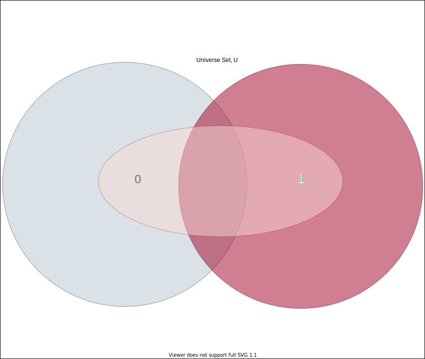

Set partitions
When finding the union of two sets \(A\) and \(B,\) it is necessary to check that the new set does not contain any repeated instances. For example, \(A = \{1, 2, 3\}\) and \(B = \{2, 3, 4\}\) the resulting set after union is the set
\[A \cup B = \{1, 2, 3, 2, 3, 4\} - \{2, 3\} = \{1, 2, 3, 4\}\]This is because sets are unordered collections of unique elements. The set of elements that the two sets have in common, \(A \cap B,\) must be identified to remove multiple instances of these elements in the union.
We say that two sets that do not share any elements in common are mutually exclusive, or pairwise disjoint. In our above example, the sets \(A\) and \(B\) are not disjoint.
By definition, disjoint sets are sets that share no common elements. It is straight forward to prove the following statement.
Statement: The intersection of disjoint sets is the Empty set, \(\emptyset.\)
Proof: Let \(A\) and \(B\) be two disjoint sets. Assume that the intersecion of \(A\) and \(B\) is not the Emptyset. Then, there is at least one element in \(A \cap B.\) Let \(x\) be such an element. Since \(x\) is in \(A \cap B,\) it follows that \(x\) is in \(A\) and \(x\) is in \(B\) by the defintion of set intersection. The truth of the previous statement would imply that \(A\) and \(B\) are not disjoint sets.
The assumption of the truth of the statement that \(A\) and \(B\) is not the Emptyset can only result in the statement that \(A\) and \(B\) are disjoint being false. Therefore, the only true sequence of statements starting with \(A\) and \(B\) are disjoint sets implies the intersection of \(A\) and \(B\) is the Emptyset is also true. \(\blacksquare\)
The Powerset of a set \(S\) is the collection of all possible subsets of \(S\). In the module for Powersets, the size of the Powerset of set \(S,\) \(\mathcal{P}(S)\) is shown to grow exponentially as the size \(n\) of set \(S\) increases. To quickly illustrate we take a set of size, cardinality, 2 and find it’s Powerset. Let \(S = \{0, 1\}.\) Then the Powerset of \(S\) is \(\mathcal{P}(S)= \{ \{ \}, \{ 0\}, \{ 1\}, \{ 0,1\}\}.\) Starting with a set \(S\) of cardinality \(\vert S \vert = n = 2,\) \(\mathcal{P}(S)\) has size \(2^{n} = 4.\)
There are sets in \(\mathcal{P}(S)\) that are not pairwise disjoint. That is, there are pairs of sets that have elements in common. One example is the proper subset \(\{0\}\) and the set \(S = \{0 , 1\}.\) Notice that the intersection of these two sets is non-empty, \(\{0\} \cap \{ 0, 1\} = \{0\}.\) While the subsets of \(S\) in the Powerset of \(S\) ‘‘cover” \(S,\) they do so in a way that creates an overlapping of sets.

The set \(S = \{0,1\}\) is covered by it’s Powerset with the elements of the Powerset represented by the ellipse, the two circles and the rectangle
In some cases, it is useful to partition a set into non-empty disjoint sets that cover the original set. In the case of our set \(S,\) a partition of \(S\) would be \(\{ \{0\}, \{1\}\}\), and it turns out that this is the only collection of subset whose union is \(S.\) One may try to argue that \(\{ \{0,1\} \}\) is a collection of non-empty subsets of \(S\) that forms a partion of \(S.\) But, there is a piece of the definition of a partition of a set that is false. The union of the sets in the partition is equal to the set, and set union is a binary operation meaning that it takes in as input two sets. It takes at least two to partition.